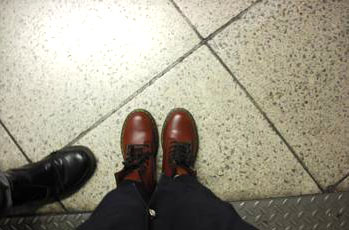

이번에는 체리레드 색으로 홍홍
2008년 첨 영국와서 구매할때
£65주고 샀는데 이제는 이게 가격이 £100다
세월참;;; 쩝쩝
비오고 춥고 땅에서 냉기 스멀스멀 올라오고
(가끔)눈도오는 런던 겨울에는
닥터마틴 만한게 없당//
인기있는건 다 이유가 있다니께 ㅎㅎ
앞으로 또 한 5년 잘 신겠구낭 :)
10월에 호러즈 공연도 댕겨오고
이번주 토욜날은 Salon Du Chocolat도 댕겨왔다
그외 British Library에서 하는
Terror and Wonder: The Gothic Imagination
은 꼭 가야햐궁 +_+
레고 The Art of The Brick도 아직 못봤다;;;
(이건 1월초까지니까 좀 여유있게;;)
이 와중에
11월 gary numan
12월 매튜본 가위손 / 캣츠 (그리자벨라가 세상에 푸시캣돌즈의 니콜이다!!! 엄훠!!)
예매완료
매튜바니 전시도 12월까지 한단다
헉헉;; 주말마다 노는것도 체력이 필요해 ㅜㅜ